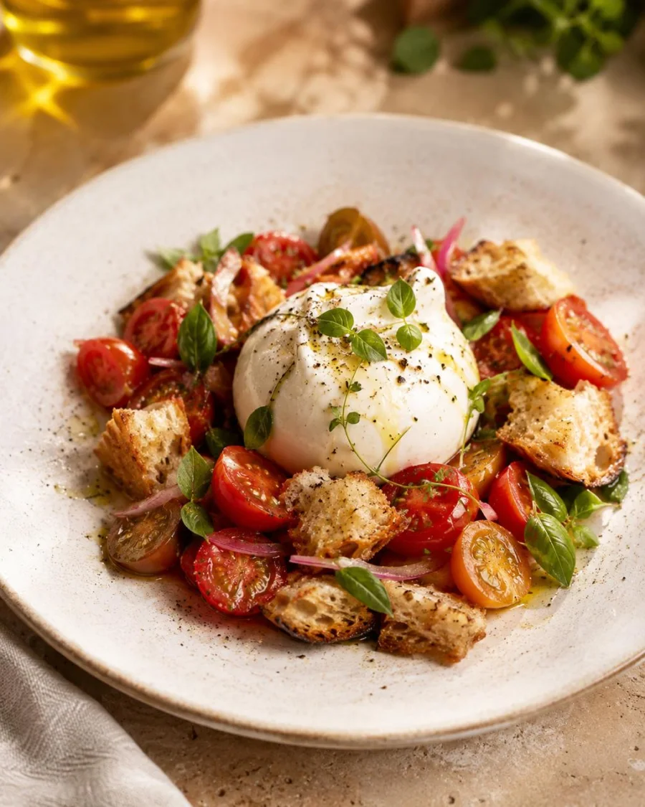
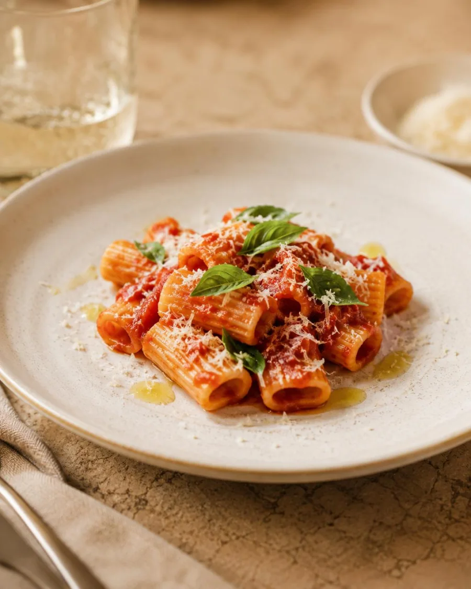
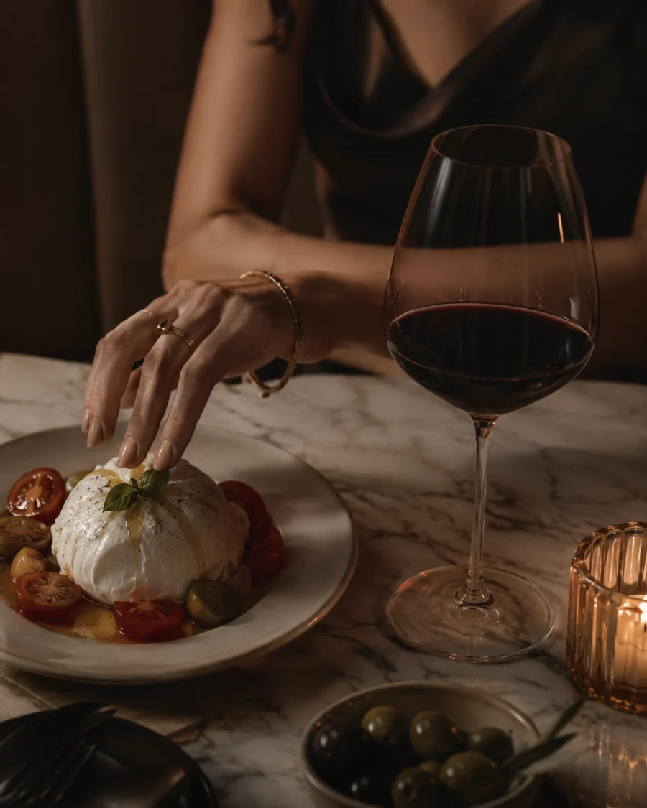
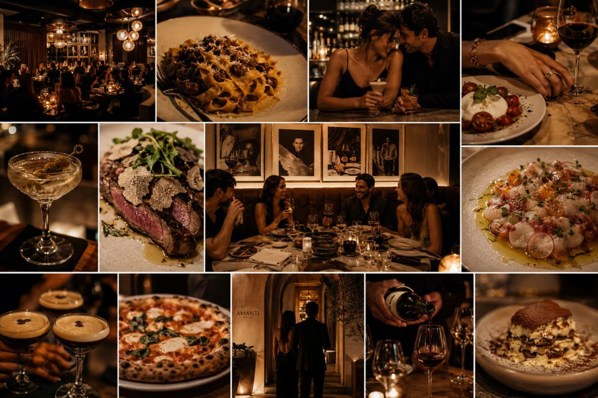
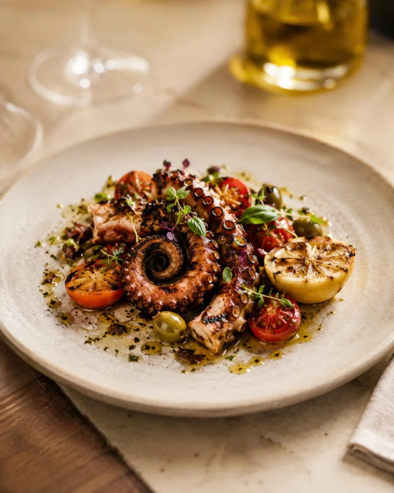
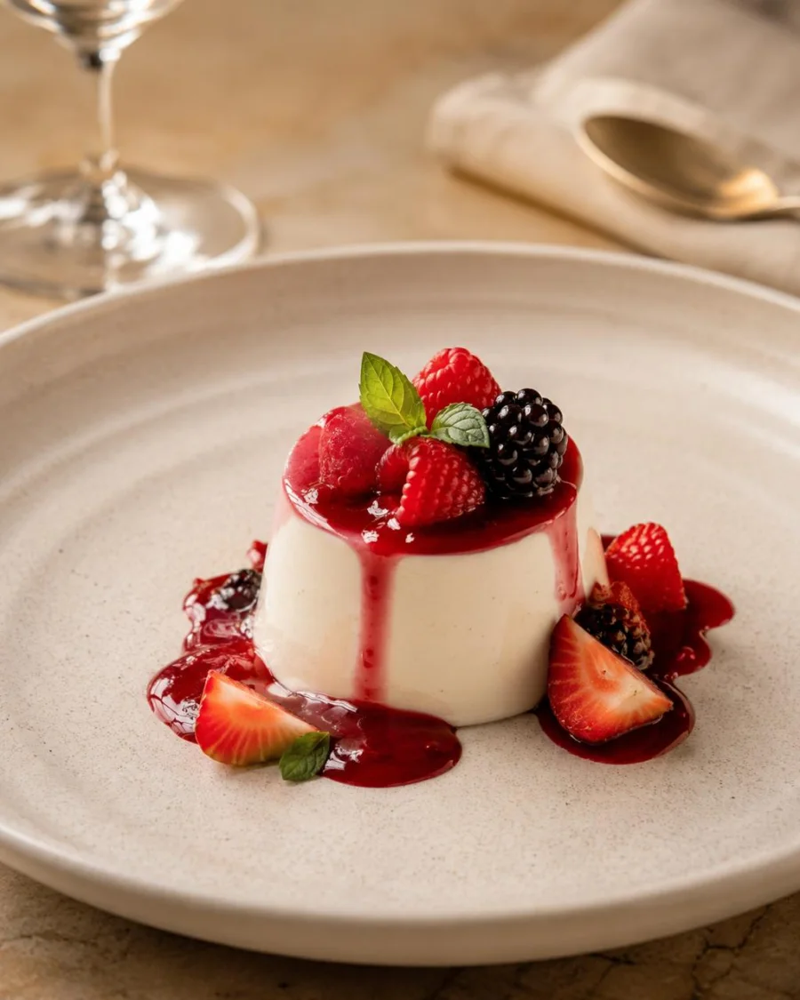
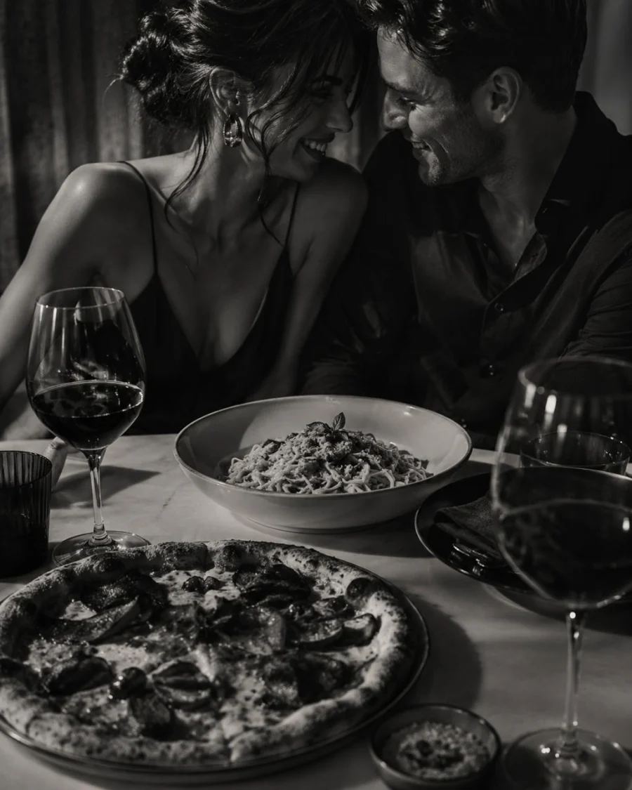
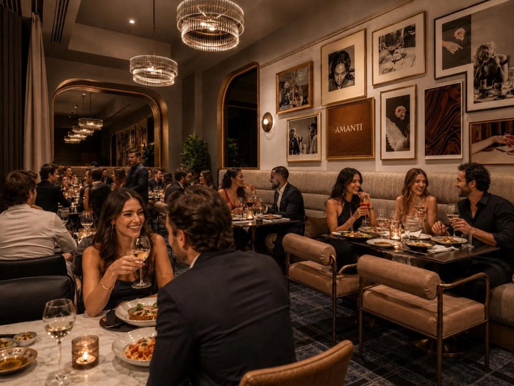
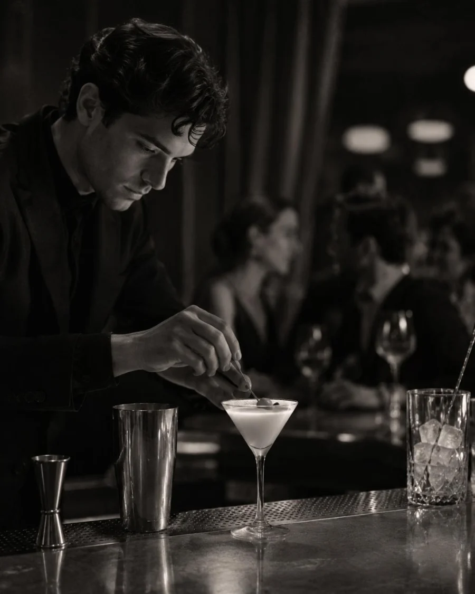

Neighborhood Italian Restaurant
AMANTI
Central Italian roots, pizza for the table, handmade-style pasta, easy wine, and a room built for Scottsdale to come back often.
A Better Everyday Italian
More neighborly. More useful. Amanti is Italian food people can actually make part of their week.
Built from warm woods, olive tones, brass, linen, plants, wine, textured walls, and hospitality that feels polished without asking guests to act formal.
The food language is simple on purpose: focaccia, antipasti, salads, pizzas, pastas, seafood, grilled meats, vegetables, olive oil, herbs, and dolce.
How It Feels
The table should fill up naturally: bread, tomatoes, pizza, pasta, wine, something from the sea.
No heavy ceremony. Just food people recognize, crave, share, and reorder.





The Room
Warm, light, social, and easy to use.
Order Like A Regular
One cold thing. One pizza. One pasta. Something green. Wine if the table is staying.



The Neighborhood Table
Come for pizza and a glass of wine. Stay because the room feels easy.
Amanti is built for weeknight dinners, family tables, casual dates, birthdays, a bar seat after work, and the regulars who want Italian food with polish but without pressure.






Gather
A restaurant that works for Tuesday pasta and Saturday dinner.
Warm light, shared plates, pizza in the middle, Italian bottles that do not need a speech, and enough polish to still feel special.



Visit
Amanti Scottsdale
17797 N Scottsdale Rd
Scottsdale, AZ 85255
Reservations, opening hours, private dining, and launch events will be released soon.